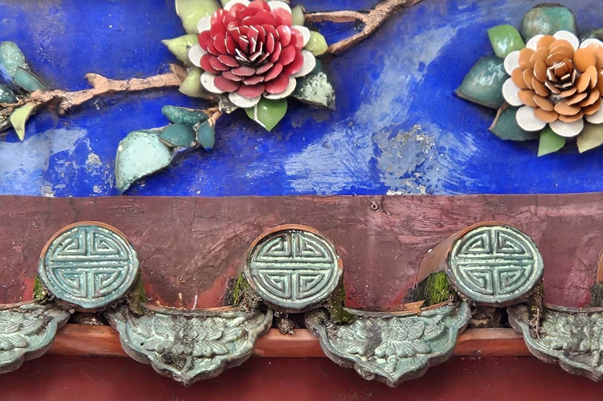

精選閱讀
用文字，走進更深的風景。
城市、文化、旅行與生活，
記錄那些值得慢慢閱讀的發現。
│ 最新文章 ─
廟宇，是一座可以閱讀的城市文化書。松山霞海城隍廟
旅行不一定要去遠方！走進松山霞海城隍廟
從建築、匠藝與文化符號出發，重新學習如何看懂一座廟。
閱讀全文 ↗
臺北孔子廟・萬仞宮牆你以為只是一面牆，它卻裝下了兩千多年的文化
從《論語》、孔德成到鴟吻、通天筒與團壽瓦當，讀懂萬仞宮牆。
閱讀全文 ↗ 日本上高地
日本上高地走進上高地，才發現最美的不是風景
從大正池到明神池，看見旅行如何與自然保持剛剛好的距離。
閱讀全文 ↗ 新潟・清津峽
新潟・清津峽一條隧道，如何把峽谷變成藝術？
走進750公尺的黑暗與光之間，重新學會觀看自然。
閱讀全文 ↗看懂廟宇，才能讀懂地方。臺灣廟宇文化
當我們不再看懂廟宇：臺灣傳統文化如何重新被閱讀？
從匠師工藝、地方故事與人生智慧，重新理解廟宇的公共文化價值。
閱讀全文 ↗旅行不只是抵達，也是理解。閱讀城市
當旅行不再只是打卡，而是閱讀城市
從79位城市讀者的回饋，看見文化走讀如何讓人重新理解一座城市。
閱讀全文 ↗更多文章將持續更新於輕旅行・女子漾